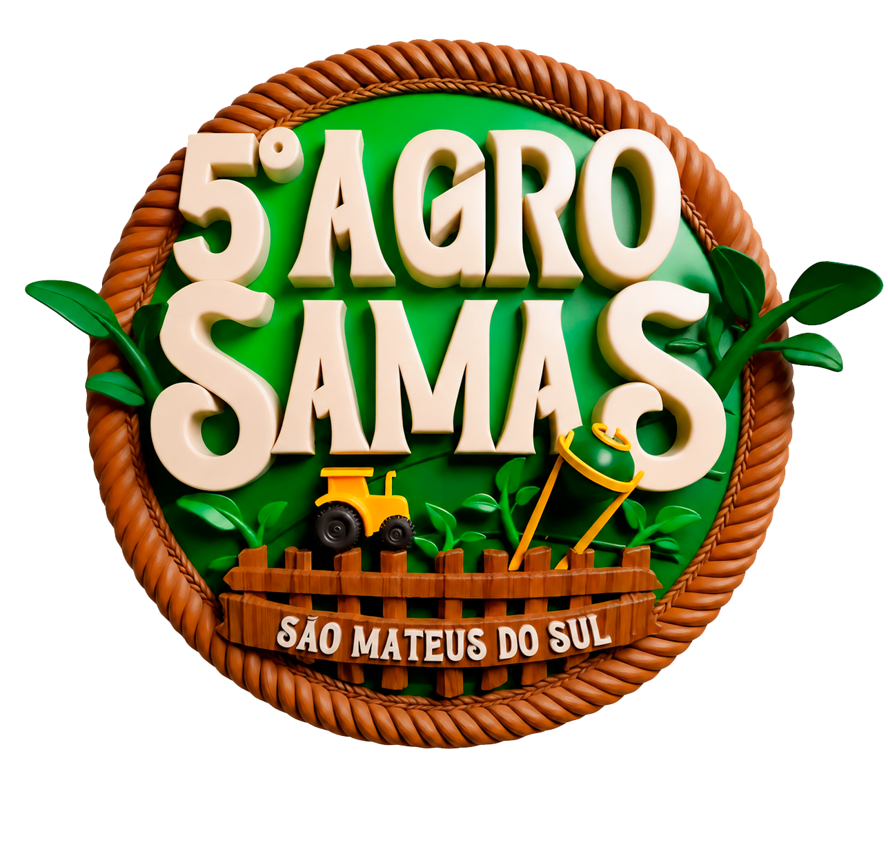

Campo
Produção regional e o trabalho que nasce do território.
Uma experiência do Portal de Turismo
AgroSamas · São Mateus do Sul

Campo, sabores, negócios e encontros ocupam a cidade em uma experiência feita para viver São Mateus do Sul.
Período em carregamento
Rua do Mathe
São Mateus do Sul · Paraná
Informações da edição
A cidade se prepara. Faltam
A cidade encontra o campo
O AgroSamas reúne agro, gastronomia, música, empreendedores e produção regional em São Mateus do Sul.
Esta página conecta a edição ao destino: primeiro, o que você precisa saber para participar; depois, tudo o que pode descobrir antes e depois do evento.
Conheça a experiênciaQuatro dias em São Mateus do Sul
O universo AgroSamas
Produção regional e o trabalho que nasce do território.
Gastronomia e produtos que aproximam quem produz de quem visita.
Empreendedores, tecnologia e conexões para movimentar a região.
Um evento também feito de encontro, convivência e palco.
Tempo compartilhado por moradores e visitantes.
A cidade é parte da experiência — não apenas o endereço do evento.
Evento + destino + visita
Transforme a ida ao evento em uma experiência completa. Encontre hospedagem, sabores, rotas e paisagens usando os guias atualizados do Portal de Turismo.
 São Mateus do Sul · Paraná
São Mateus do Sul · Paraná
Como chegar
Consulte o mapa turístico para visualizar o local e planejar o trajeto. Orientações operacionais serão exibidas aqui somente após divulgação oficial.
Ver no mapaInformações úteis
Continue a viagem
Entre a cultura, a erva-mate e o Rio Iguaçu, há muito mais para viver no destino.
Explorar São Mateus do Sul